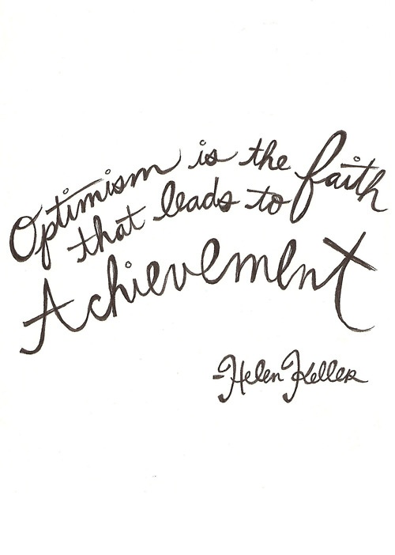
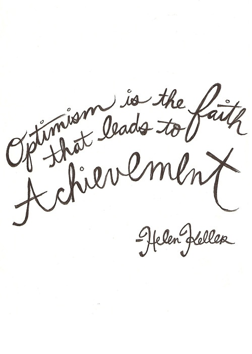

Name : Boonyaporn Narkjumrussri
Nickname : Nampueng
Date of birth : 21th December 1994
Student id : 5610404452
Email : boonyaporn.n@ku.th
University : Kasetsart University Bangkhen campus
Bachelor degree : Sciences
Majoring : Computer Science
|

|
ชื่อ : นางสาวบุณยาพร นาคจำรัสศรี
ชื่อเล่น : น้ำผึ้ง
เกิด : 21 ธันวาคม 2537
รหัสนิสิต : 5610404452
อีเมลล์ : boonyaporn.n@ku.th
มหาวิทยาลัย : เกษตรศาสตร์ บางเขน
คณะ : วิทยาศาสตร์
ภาควิชา : วิทยาการคอมพิวเตอร์
|
 

Q U O T E
quote(v.)
to repeat the words that someone else has said or written.
Be yourself; everyone else is already taken.
―― Oscar Wilde
No one can make you feel inferior without your consent.
―― Eleanor Roosevelt
You only live once, but if you do it right, once is enough.
―― Mae Westt
Be the change that you wish to see in the world.
―― Mahatma Gandhi
If you want to know what a man’s like, take a good look at how he treats his inferiors, not his equals.
―― J.K. Rowling, Harry Potter and the Goblet of Fire